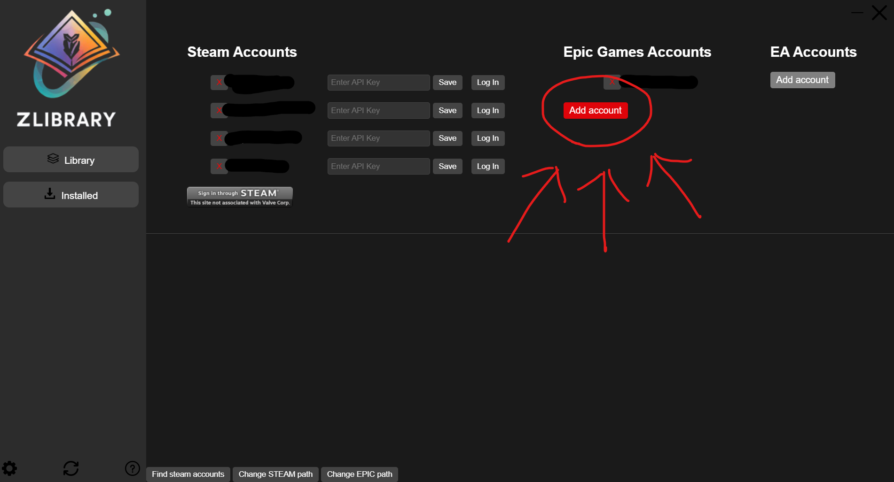
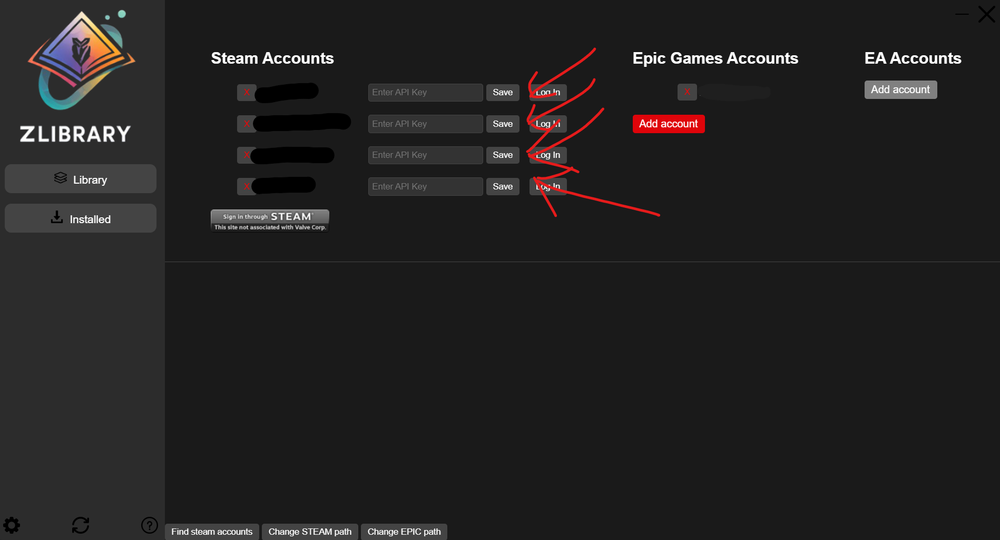

If the API is not running, you can shut down the app and RUN AS ADMINISTRATOR.
If the API is running and you still have an issue, please contact me or report the issue on GitHub.
Step 1: Select a game
Step 2: Click play (If there is only one account, the game will start with the correct account automatically)
Step 3: Select an account, and the game will start on the selected account
Step 1: Click the refresh icon and wait
Step 1: Open settings
Step 2: Click "Find Steam accounts" and wait
Step 1: Open settings
Step 2: Click "Sign in through STEAM"
Step 3: Log in (You can use the Developer Tools to check, it's the normal Steam login page)
Step 4: Go to the main page and refresh the game list
Step 1: Open settings
Step 2: Click "Add account" under EPIC GAMES
Step 3: Log in (You can use the Developer Tools to check, it's the normal Epic Games login page)
Step 4: Go to the main page and refresh the game list
Step 1: Go to settings
Step 2: Select your Steam folder
Step 1: Go to settings
Step 2: Enter the API KEY IMPORTANT!!! Make sure to match the STEAM API KEY with the appropriate account
Step 3: Save your settings
